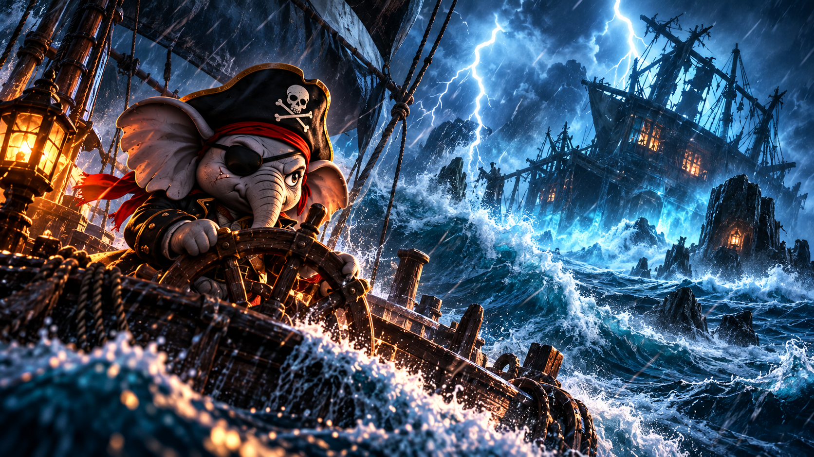

CHAPTER 01
Beyond the Horizon
One little elephant dares to leave everything behind and sail toward an unknown world.
Read Chapter →
Beyond the horizon, a new legend begins.
Follow the extraordinary journey of KOKI.
One little elephant dares to leave everything behind and sail toward an unknown world.
Read Chapter →
A deadly storm. A mysterious shipwreck. And a stranger carrying the key to a forgotten secret.
Read Chapter →
An island of lost ships. A mysterious raven captain. And a terrible choice that reveals what kind of pirate KOKI truly is.
Read Chapter →
A battle against a cursed crew. A father's hidden message. And a young captain who discovers that even the dead deserve mercy.
Read Chapter →
A terrible secret. A broken promise. KOKI loses everything while fighting to protect his first true friend.
Read Chapter →
An ancient guardian. A forgotten city beneath the waves. And a golden compass that reveals the true meaning of courage.
Read Chapter →
The first seal has fallen. An army rises from the deep. And a young captain must unite the living and the dead.
Read Chapter →
A life-bound curse. A broken promise. KOKI risks his freedom to save the captain who once betrayed him.
Read Chapter →